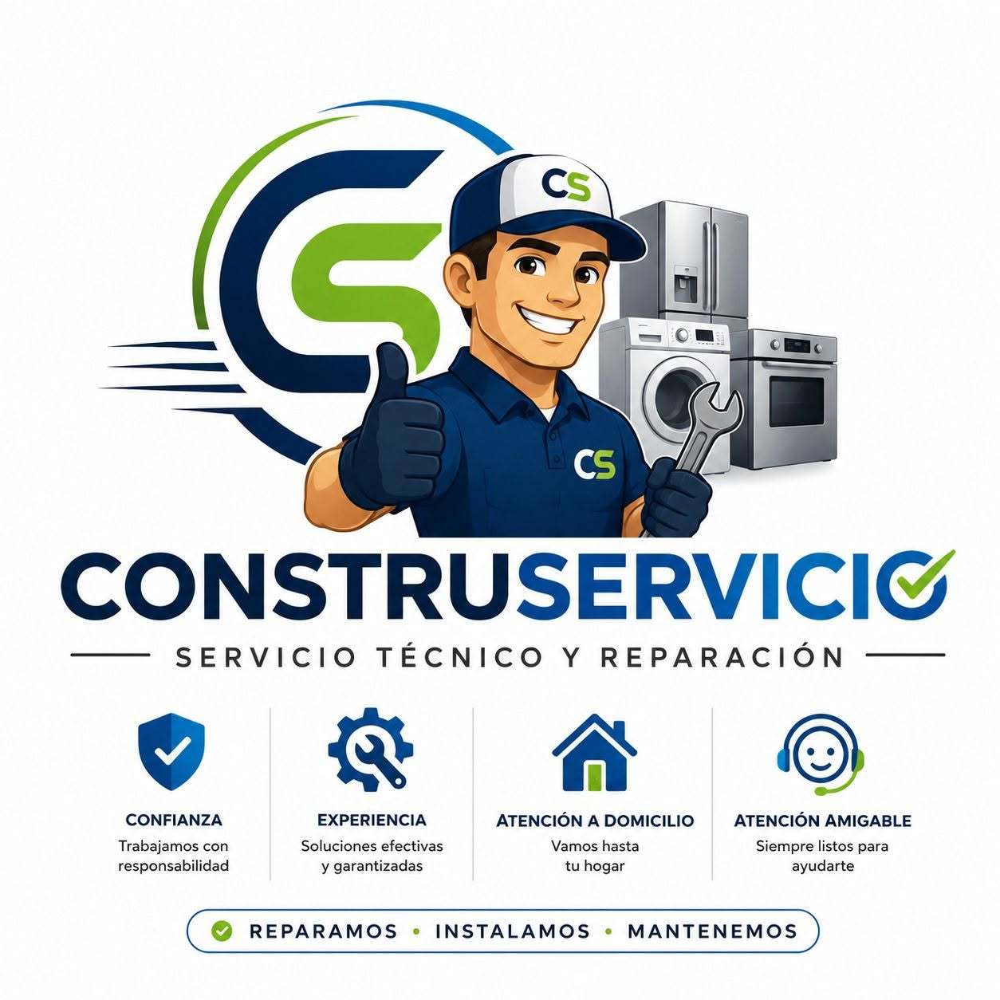

Refrigeración
y neveras
Diagnóstico, carga de gas, sensores, tarjetas electrónicas y compresores.
Mabe · Haceb · LG · Samsung · WhirlpoolServicio técnico que responde
Servicio técnico experto a domicilio en Soacha, Bogotá y Cundinamarca. Diagnóstico claro, trabajo respaldado y una orden digital para que todo quede por escrito.

Lo que hacemos
Un equipo detenido cuesta tiempo, dinero y tranquilidad. Llegamos con diagnóstico, herramientas y un plan claro para volverlo a poner en marcha.
Diagnóstico, carga de gas, sensores, tarjetas electrónicas y compresores.
Mabe · Haceb · LG · Samsung · WhirlpoolTransmisión, bombas de desagüe, tarjetas digitales y mantenimiento preventivo.
Hogar funcionando, sin improvisar.Instalación eléctrica dedicada, mantenimiento profundo, fugas y climatización.
Residencial · ComercialAdecuaciones eléctricas, enchapes, acabados y soporte técnico integral.
Liderado por Richard ChávezLa diferencia ConstruServicio
Sin orden, sin claridad, sin respaldo después de cerrar la puerta.
Orden digital CS-OS-, diagnóstico transparente, garantía escrita y soporte directo al 3144733375.
Primer paso
Déjanos los datos básicos y te contactamos por WhatsApp para coordinar la visita técnica.
Escribes el problema
en menos de un minuto
Confirmamos la visita
directo contigo